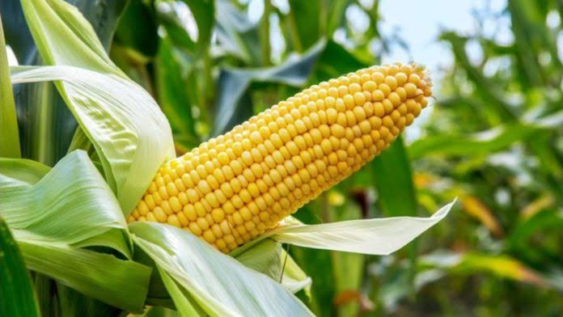

Maize Farming

Site Selection
Select a well drained fertile Sandy loam soil that is rich in organic matter but avoid water logging condition.
Field Measurement
Field measurement is very important because its accuracy guidesfarmers to know their farmsizesforvital decision on farm operations including the right amount of inputs needed and the anticipated yields from the farms. The use of (Geographical positioning System, GPS) hands receiver has simplified the rigor of land measurement. Land area can be easily measured using GPS receiver while transecting the perimeter of the land. For field measurement using GPS, refer to GPS manual
Land Preparation
In the southern parts of the country where vegetation cover is fairly dense, land clearing should be carried out well ahead of the rains. Make ridges as soon as the rains start. Although the crop benefits from the deep cultivation, maize yields are not reduced when zero tillage is adopted. Make ridges at 75cm apart. Because the soils in the savannas are loose, animal drawn implements can be used for preparing ridges or by had hoe and tractor mounted tillage equipment.

Fig. 1 Mechanized Fig 2 Animal traction Fig. 3 Manual
Variety and seed selection
Request for information on sources of improved seed varieties suitable to your location from the ADPs Research Institute or NASC. About 20kg of maize seed is recommended to plant one hectare. Some recommended varieties are listed below:
Table 1 Recommended varieties
ECOLOGY
VARIETY
CHARACTERISTICS
Lowland Tropics
Sammaz17
High yield, medium maturity and Strigatolerance
Lowland Tropics
Sammaz18
High yield, early maturity and strigatolerance
Lowland Tropics
Sammaz19
High yield, Drought and Strigatolerance
Drought prone areas and 2ndseason planting in Southern Nigeria
Sammaz20
Highly tolerant to drought with resistant to streak and tolerant to low soil nitrogen
Drought prone areas with strigahermonthicainfestation
Sammaz21
Highly tolerant to Strigahermonthicainfestation
Drought prone areas of Northern Guinea Savannah
Sammaz22
Highly tolerant to drought with resistance to streak and tolerance to low soil nitrogen
Drought prone areas of Northern Guinea Savannah
Sammaz23
Highly tolerant to drought with resistance to streak and tolerance to low soil nitrogen
Drought prone areas of Northern Guinea Savannah
Sammaz24
Highly tolerant to drought with resistance to streak and tolerance to low soil nitrogen
Drought prone areas of Northern Guinea Savannah
Sammaz25
Highly tolerant to drought with resistance to streak and tolerance to low soil nitrogen
Wide adaptation
Sammaz26
Highly tolerant to drought with resistance to streak and tolerance to low soil nitrogen